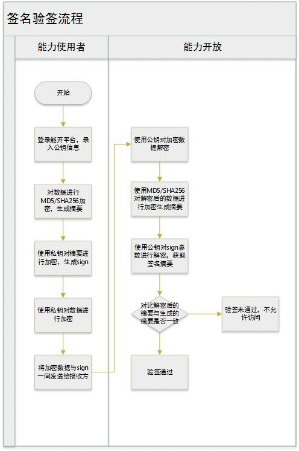
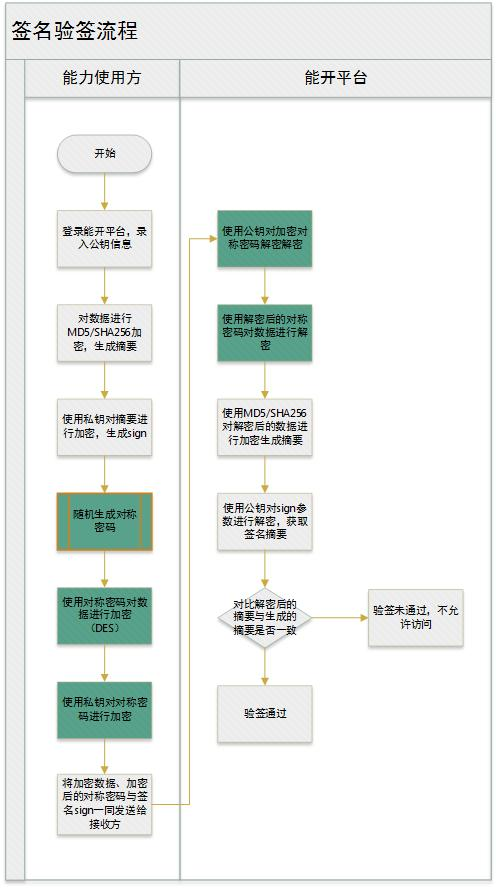
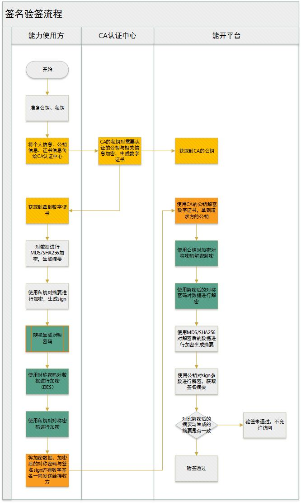

加密签名与解密验签总结
背景
近期在做后台管理系统中，需要与其他系统交换信息，需要做加密和数字签名，发现对这部分还不甚了解，做了一些功课，总结一下。
需求分析
应对场景是第三方系统与本系统进行数据交换时，确保数据传输过程没有被修改，并且由于在公网进行数据交换还必须保证交换数据中的敏感信息不能泄露。
- 确保数据不被修改，可以采用数字签名方式，接收方需要对签名进行验签。
- 敏感信息部分进行加密
- 请求和响应都需要签名和加密
- 加密方式选择更安全的非对称加密方式（RSA）
基本设计方案
基本方案采用传统的签名验签流程 能力使用方持有私钥，能开平台持有公钥
签名验签流程： 
实际使用中，每一个能力使用方，需要在能开平台录入公钥信息；
性能问题
由于进行的都是大数计算，使得RSA最快的情况也比DES慢上好几倍，无论是软件还是硬件实现。速度一直是RSA的缺陷。一般来说只用于少量数据加密。RSA的速度是对应同样安全级别的对称密码算法的1/1000左右。
因此当加密数据较大时，解密速率会严重影响交互性能。
优化设计方案–应对大量数据加解密的性能问题
对大量数据采用性能更好的对称加密方式，使用非对称加密对密码进行加密，一起传递给接收方 
公钥证书的安全问题
上面的流程在传输过程中已经可以确保信息不被修改，不泄露敏感信息。唯一还可能存在的信息泄漏问题在于接收方的公钥存在被替换的可能（获取公钥的过程，或者人为替换），那么以上所有的加密都没有意义了。
为了解决公钥的安全性问题，通常需要借助CA认证平台，进行公钥认证，获得“数据证书”。
优化设计方案–数字证书方案
接入方需要把公钥在CA证书平台进行公证，拿到数字签名，同时，接受方需要获得CA平台的公钥。 
总结：
数据加密、签名是保障安全性的基础，越是需要保障数据安全的场景，加密签名的流程越复杂。
附：常用加密算法
单秘钥密码（对称加密）
加密和解密使用相同密钥的加密算法。 优点：速度快，破译极其困难。适用于大量数据加密。 缺点：加密的安全性依靠密钥保管的安全性。
常用的对称加密算法是DES加密。
DES加密
DES算法在POS、ATM、磁卡及智能卡（IC卡）、加油站、高速公路收费站等领域被广泛应用 * DES的原始思想可以参照二战德国的恩尼格玛机，其基本思想大致相同。传统的密码加密都是由古代的循环移位思想而来，恩尼格玛机在这个基础之上进行了扩散模糊。但是本质原理都是一样的。现代DES在二进制级别做着同样的事：替代模糊，增加分析的难度。 * DES 使用一个 56 位的密钥以及附加的 8 位奇偶校验位（每组的第8位作为奇偶校验位），产生最大 64 位的分组大小。这是一个迭代的分组密码，使用称为 Feistel 的技术，其中将加密的文本块分成两半。使用子密钥对其中一半应用循环功能，然后将输出与另一半进行“异或”运算；接着交换这两半，这一过程会继续下去，但最后一个循环不交换。DES 使用 16 轮循环，使用异或，置换，代换，移位操作四种基本运算。
3DES加密
3DES是DES加密算法的一种模式，它使用3条64位的密钥对数据进行三次加密。3DES（即Triple DES）是DES向AES过渡的加密算法（1999年，NIST将3-DES指定为过渡的加密标准），是DES的一个更安全的变形。它以DES为基本模块，通过组合分组方法设计出分组加密算法。
AES加密
AES(Advanced Encryption Standard)：高级加密标准，是下一代的加密算法标准，速度快，安全级别高。AES算法基于排列和置换运算。排列是对数据重新进行安排，置换是将一个数据单元替换为另一个。AES使用几种不同的方法来执行排列和置换运算。AES是一个迭代的、对称密钥分组的密码，它可以使用128、192和256位密钥，并且用128位（16字节）分组加密和解密数据。
消息摘要 （唯一性）
一个消息摘要就是一个数据块的数字指纹。即对一个任意长度的一个数据块进行计算，产生一个唯一指印。 优点：唯一性，两个不同的报文难以生成相同的摘要 缺点：加密不可逆，难以而由数据指纹反推算出指定的摘要
常用的消息摘要有：美国国家标准技术研究所的 SHA1 和麻省理工学院 Ronald Rivest 提出的 MD5
SHA1加密算法
安全哈希算法（Secure Hash Algorithm）主要适用于数字签名标准 （Digital Signature Standard DSS）里面定义的数字签名算法（Digital Signature Algorithm DSA）。对于长度小于2^64位的消息，SHA1会产生一个160位的消息摘要。当接收到消息的时候，这个消息摘要可以用来验证数据的完整性。在传输的过程中，数据很可能会发生变化，那么这时候就会产生不同的消息摘要。 SHA1有如下特性：不可以从消息摘要中复原信息；两个不同的消息不会产生同样的消息摘要,(但会有1x10 ^ 48分之一的机率出现相同的消息摘要,一般使用时忽略)。
MD5加密算法
MD5消息摘要算法（英语：MD5 Message-Digest Algorithm），一种被广泛使用的密码散列函数，可以产生出一个128位（16字节）的散列值（hash value），用于确保信息传输完整一致。MD5由美国密码学家罗纳德·李维斯特（Ronald Linn Rivest）设计，于1992年公开，用以取代MD4算法。
Diffie-Hellman密钥协议算法
Diffie-Hellman密钥协议算法是一种确保共享密钥KEY安全穿越不安全网络的方法，它是OAKLEY的一个组成部分，由Whitefield与Martin Hellman在1976年提出。这个机制的巧妙在于需要安全通信的双方可以用这个方法确定对称密钥。然后可以用这个密钥进行加密和解密。但是注意，这个密钥交换协议/算法只能用于密钥的交换，而不能进行消息的加密和解密。双方确定要用的密钥后，要使用其他对称密钥操作加密算法实际加密和解密消息。
非对称算法与公钥体系
在公钥体制中，加密密钥不同于解密密钥，加密密钥公之于众，谁都可以使用；解密密钥只有解密人自己知道。它们分别称为公开密钥（Public key）和秘密密钥（Private key）。
常用的非对称加密算法是RSA
RSA加密算法
RSA加密算法是一种非对称加密算法。在公开密钥加密和电子商业中RSA被广泛使用。对极大整数做因数分解的难度决定了RSA算法的可靠性。换言之，对一极大整数做因数分解愈困难，RSA算法愈可靠。假如有人找到一种快速因数分解的算法的话，那么用RSA加密的信息的可靠性就肯定会极度下降。但找到这样的算法的可能性是非常小的。今天只有短的RSA钥匙才可能被强力方式解破。到目前为止，世界上还没有任何可靠的攻击RSA算法的方式。只要其钥匙的长度足够长，用RSA加密的信息实际上是不能被解破的。 * 由于进行的都是大数计算，使得RSA最快的情况也比DES慢上好几倍，无论是软件还是硬件实现。速度一直是RSA的缺陷。一般来说只用于少量数据加密。RSA的速度是对应同样安全级别的对称密码算法的1/1000左右。 * 比起DES和其它对称算法来说，RSA要慢得多。